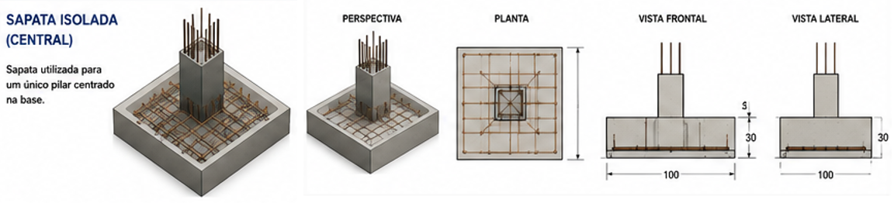
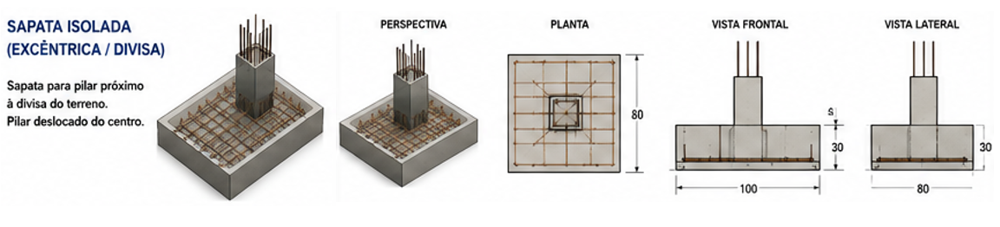
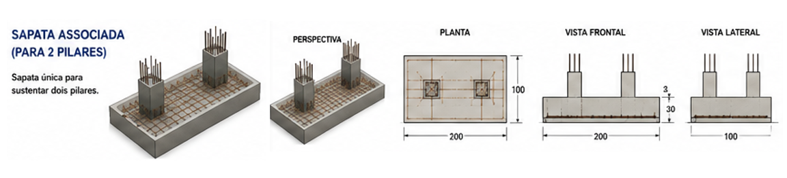
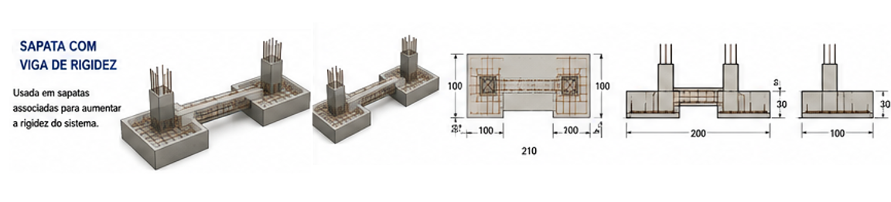
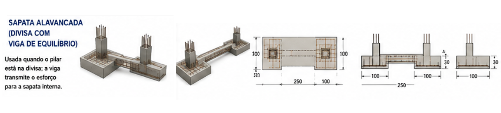
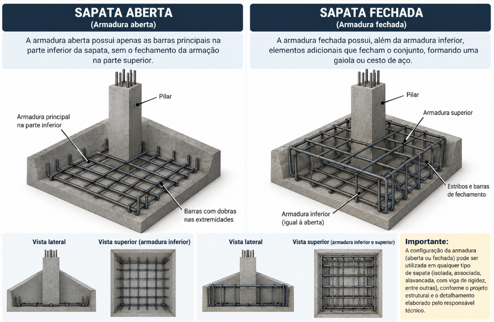

O que é sapata isolada central?
É a sapata mais simples: sustenta um único pilar, centrado bem no meio da base da sapata.

Exemplo ilustrativo — sapata 100×100×30 cm:
Peças de exemplo (não é receita fixa — confira sempre o seu projeto)
| Peça | Bitola | Qtd. | Compr. corte | Dobra | Obs. |
|---|---|---|---|---|---|
| Barra inferior X | ø10,0 | 8 | 920 mm | Reta | Camada inferior |
| Barra inferior Y | ø10,0 | 8 | 920 mm | Reta | Camada inferior |
| Estribo de reforço | ø6,3 | 20 | 880 mm | Reta | Distribuição |
| Arranque do pilar | ø12,5 | 4 | 1200 mm | 90° | Arranque |
Consumo aproximado: ø10,0 → 14,72 m (9,1 kg) · ø6,3 → 17,6 m (4,3 kg) · ø12,5 → 4,8 m (4,6 kg) · total ≈ 18,0 kg. Volume de concreto: 0,30 m³.
O que é sapata isolada excêntrica (de divisa)?
É a sapata usada quando o pilar fica perto da divisa do terreno e não há espaço pra centralizar a base. O pilar fica deslocado do centro da sapata — por isso o nome "excêntrica".

Exemplo ilustrativo — sapata 100×80×30 cm (pilar excêntrico):
Peças de exemplo (não é receita fixa — confira sempre o seu projeto)
| Peça | Bitola | Qtd. | Compr. corte | Dobra | Obs. |
|---|---|---|---|---|---|
| Barra inferior X | ø10,0 | 7 | 920 mm | Reta | Camada inferior |
| Barra inferior Y | ø10,0 | 5 | 720 mm | Reta | Camada inferior |
| Estribo de reforço | ø6,3 | 18 | 680 mm | Reta | Distribuição |
| Arranque do pilar | ø12,5 | 4 | 1200 mm | 90° | Arranque |
Consumo aproximado: ø10,0 → 10,04 m (6,2 kg) · ø6,3 → 12,24 m (3,0 kg) · ø12,5 → 4,8 m (4,6 kg) · total ≈ 13,8 kg. Volume de concreto: 0,24 m³.
O que é sapata associada?
É uma sapata única que sustenta dois pilares ao mesmo tempo, usada quando os pilares ficam próximos demais pra ter uma sapata separada para cada um.

Exemplo ilustrativo — sapata 200×100×30 cm (2 pilares):
Peças de exemplo (não é receita fixa — confira sempre o seu projeto)
| Peça | Bitola | Qtd. | Compr. corte | Dobra | Obs. |
|---|---|---|---|---|---|
| Barra inferior X | ø10,0 | 11 | 1920 mm | Reta | Camada inferior |
| Barra inferior Y | ø10,0 | 7 | 920 mm | Reta | Camada inferior |
| Estribo de reforço | ø6,3 | 26 | 880 mm | Reta | Distribuição |
| Arranque do pilar | ø12,5 | 8 | 1200 mm | 90° | Arranque |
Consumo aproximado: ø10,0 → 27,56 m (17,0 kg) · ø6,3 → 22,88 m (5,6 kg) · ø12,5 → 9,6 m (9,3 kg) · total ≈ 31,9 kg. Volume de concreto: 0,60 m³.
O que é sapata com viga de rigidez?
É uma sapata associada que ganha uma viga extra ligando os pilares, pra deixar o conjunto mais rígido e ajudar a evitar que as sapatas afundem de forma diferente uma da outra.

Exemplo ilustrativo — 2 sapatas + 1 viga de rigidez:
Cada sapata: ø10,0 → 11,48 m (7,1 kg) · ø6,3 (estribo) → 12,24 m (3,0 kg) · ø12,5 (arranque) → 4,8 m (4,6 kg) → cerca de 14,7 kg por sapata (29,4 kg nas duas). Viga de rigidez: ø12,5 → 16,8 m (16,2 kg) · ø6,3 (estribo) → 10,92 m (2,7 kg) → cerca de 18,9 kg.
Total do conjunto ≈ 48,3 kg.
O que é sapata alavancada (com viga de equilíbrio)?
É usada quando um pilar fica bem na divisa do terreno e não cabe uma sapata só pra ele. Uma viga (a viga alavanca) transmite parte da carga desse pilar de divisa até a sapata de um pilar vizinho (a sapata interna), equilibrando o esforço entre as duas.

Exemplo ilustrativo — conjunto sapata externa + viga alavanca + sapata interna:
Sapata externa: ø10,0 → 8,64 m (5,3 kg) · ø6,3 → 9,28 m (2,3 kg) · ø12,5 → 4,8 m (4,6 kg) ≈ 12,2 kg. Viga alavanca: ø12,5 → 20 m (19,3 kg) · ø6,3 → 11,76 m (2,9 kg) ≈ 22,2 kg. Sapata interna: ø10,0 → 12,88 m (7,9 kg) · ø6,3 → 17,6 m (4,3 kg) · ø12,5 → 4,8 m (4,6 kg) ≈ 16,9 kg.
Total do conjunto ≈ 51,3 kg.
O que é sapata aberta e sapata fechada?
São termos que descrevem como a armadura é montada, e não o tipo estrutural da sapata. Na sapata aberta a armação é mais simples, sem fechamento completo; na sapata fechada há elementos adicionais que fecham o conjunto, formando uma espécie de gaiola (ou cesto) de aço.

- Sapata aberta: armadura com configuração mais aberta, sem o fechamento completo da armação, formando uma estrutura mais simples.
- Sapata fechada: armadura com elementos adicionais que fecham o conjunto, formando uma espécie de gaiola ou cesto de aço.
A mesma sapata, quanto ao tipo estrutural, pode ter armadura aberta ou fechada conforme o projeto e o detalhamento. Por exemplo, existe sapata isolada com armadura aberta e sapata isolada com armadura fechada.
Dúvidas frequentes
Por que existem tipos diferentes de sapata?
Principalmente por causa da posição do pilar (centralizado ou perto da divisa do terreno) e de quantos pilares estão próximos um do outro. Cada situação pede um jeito diferente de distribuir a carga no solo.
Toda sapata tem armadura na parte de baixo e arranque do pilar?
De forma geral, sim: a armadura principal fica na camada inferior da sapata, e sobe um trecho de "arranque" pra continuar a armadura do pilar que nasce ali. A quantidade e a bitola de cada barra variam por projeto — sempre confira no detalhamento da sua obra.
Qual o cobrimento mínimo de uma sapata?
Como a sapata fica em contato direto com o solo, o cobrimento costuma ser maior que o de vigas e pilares. Confirme sempre o valor no seu projeto — ele muda conforme a classe de agressividade do ambiente e se há ou não lastro de concreto magro sob a sapata.